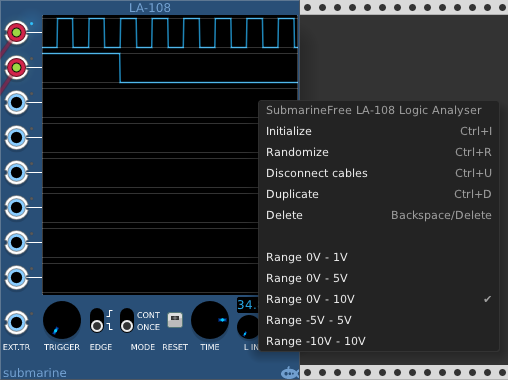

The Digital Suite is a set of modules designed to handle digital logic. It includes line drivers, logic gates and a logic analyser.
The voltage range of the digital gates can be configured from the context menu. The device will output at the full range of the configured settings. The inputs will measure a logical high signal anywhere above the midpoint of the configured range.
Digital ports have been fitted with blue sockets to indicate that they are expecting digital signals. All such ports will comfortably accept analog audio or control voltages.
The AG-202, OG-202, NG-206 and XG-202 devices are polyphonic and will carry out up to 16 bitwise operations in parallel.